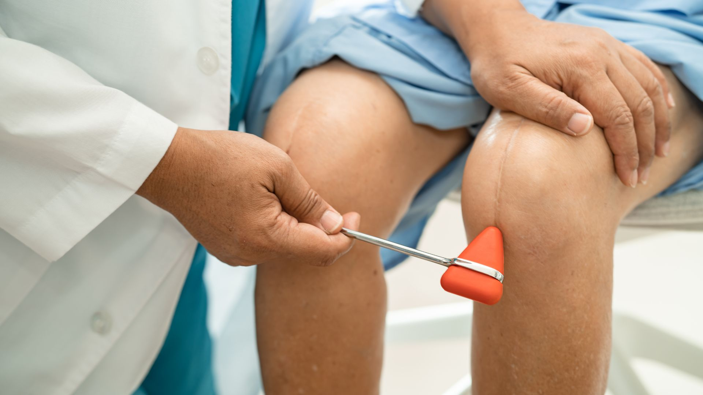

Neurological Rehabilitation
Our neurological rehabilitation program is designed with a holistic approach to address the unique challenges faced by individuals with neurological conditions.

Overview of Our Program:
- Comprehensive Assessment: Our initial step involves conducting detailed evaluations to gain a deep understanding of the individual's neurological status. This includes assessing motor functions, sensation, balance, coordination, and cognitive abilities, ensuring a thorough understanding of the patient's condition.
- Individualized Treatment Plans: Utilizing the insights gained from our assessments, we craft personalized treatment plans. These plans are tailored to meet the specific needs and objectives of each individual, focusing on achieving the best possible outcomes.
- Neuromuscular Re-Education: A key component of our program is neuromuscular re-education. This involves retraining the nervous system to regain control over movement and coordination, utilizing specialized exercises and techniques to restore normal patterns of movement and muscle function.
- Gait and Balance Training: To enhance mobility, we offer gait training aimed at improving walking patterns. Alongside, our balance exercises are designed to bolster stability and minimize the risk of falls, crucial aspects of regaining independence.
- Functional Rehabilitation: Our rehabilitation efforts are goal-oriented, focusing on enhancing the ability to perform daily living activities such as dressing, grooming, eating, and general mobility. We aim to restore as much independence as possible through targeted interventions.
Common Conditions We Treat:
We provide comprehensive rehabilitation services for a variety of neurological conditions, including:
- Stroke (Cerebrovascular Accident): Tailored rehabilitation to aid recovery from the physical, cognitive, and emotional impacts of a stroke.
- Traumatic Brain Injury (TBI): Personalized approaches to address the wide range of outcomes associated with TBI.
- Spinal Cord Injury (SCI): Focused strategies to improve function and quality of life following SCI.
- Parkinson's Disease: Customized exercises and therapies to manage symptoms and enhance movement.
- Bell's Palsy: Targeted treatments to restore facial muscle function and symmetry.
Our dedicated team is committed to providing comprehensive support, guiding patients through their recovery journey towards regaining their maximum potential and improving their quality of life.